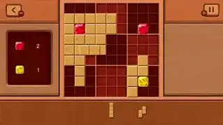
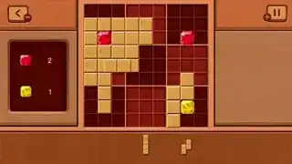

My Professional Projects
Country Balls
A Swika clone with the humor and charm of the famous Country Balls memes.
- Role: Switch porting & leaderboard systems
- Contributions:
- Switch porting
- Local leaderboards implementation
- NPLN online leaderboards integration
- Status: Released
Target Platform
Crazy Crypto
A crypto-themed twist on Swika game mechanics, where "coins always go up."
- Role: Switch porting & leaderboard systems
- Contributions:
- Switch porting
- Local leaderboards implementation
- NPLN online leaderboards integration
- Status: Released
Target Platform
 

TimberDoku
A classic block puzzle game with a wood-themed visual style, focusing on line and square clearing for high scores and combos for even higher ones!
- Role: Switch porting & systems integration
- Contributions:
- Switch porting
- Local leaderboards implementation
- Custom multi-user save data system
- Status: Released
Target Platform
Just BINGO!
A reimagined version of classic Bingo with combos and competitive scoring.
- Role: Unity development & API integration
- Contributions:
- Prototyping and core gameplay development
- Front-end implementation
- Custom API integration
- Status: Released
Target Platform
GemBlast
A match-3 puzzle game focused on combos, super gems, and power-ups.
- Role: Unity development & API integration
- Contributions:
- Prototyping and core gameplay development
- Front-end implementation
- Custom API integration
- Status: Released
Target Platform
Undisclosed Projects (2x)
Commercial projects currently under NDA.
- Role: Godot Switch porting & custom integrations
- Contributions:
- Godot Switch porting
- Custom Joy-Con integration for multiple players per controller
- Online leaderboards and multiplayer integrations
- Status: Cancelled / Ongoing (depending on NDA)
Target Platform
My Personal Projects
Skull Game
A small project made in 4 days for a personal game jam. My goal was to create a fun, playable browser game to showcase on my itch.io page.
- Goal: Create a browser-playable game for portfolio
- Role: Programming, sound design, asset integration
- Contributions:
- Developed all gameplay code
- Created most sound effects and ambient audio
- Kitbashed 3D models from publicly available assets
- Status: Completed
- Play it on: itch.io
Target Platform
Space Shump 2D
An ongoing project where I take a deep dive into the shoot-'em-up genre, my objective with it is to study a game genra and understand the fundamentals of it's game desing and execution.
- Goal: Learn genre-specific game design principles
- Role: Solo developer (programming & design)
- Status: In development